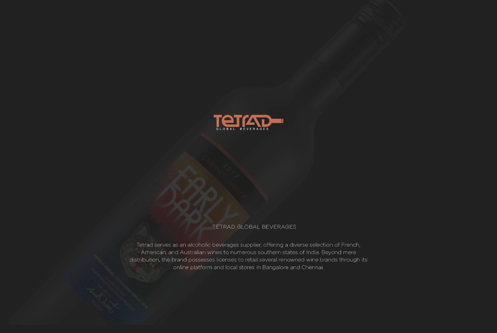
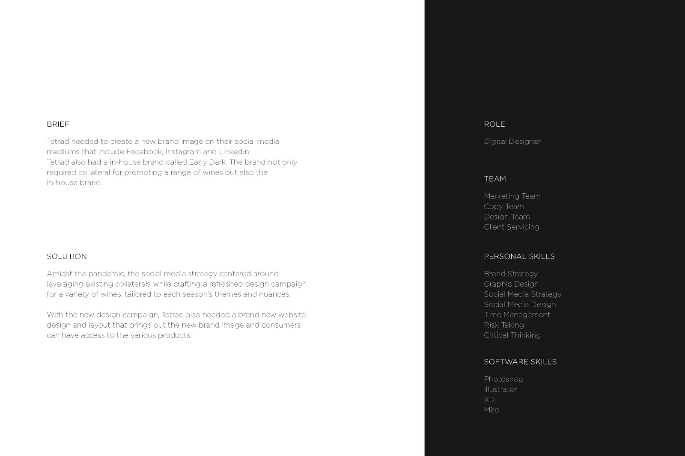
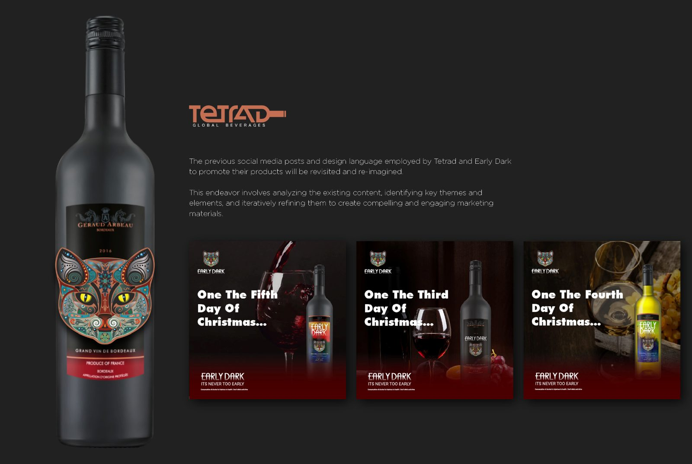
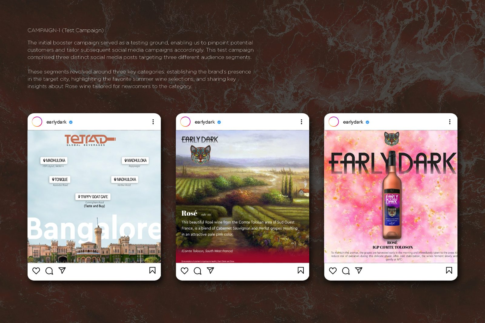
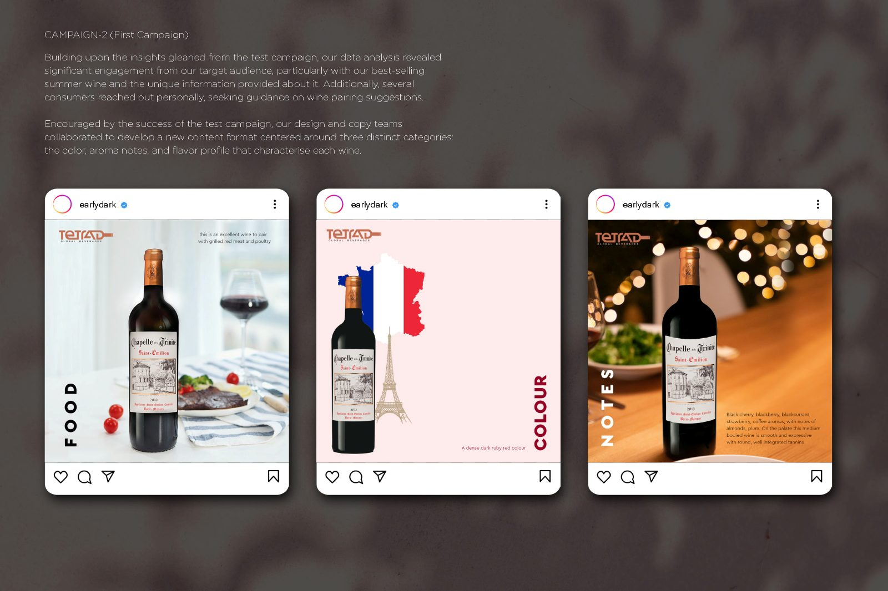
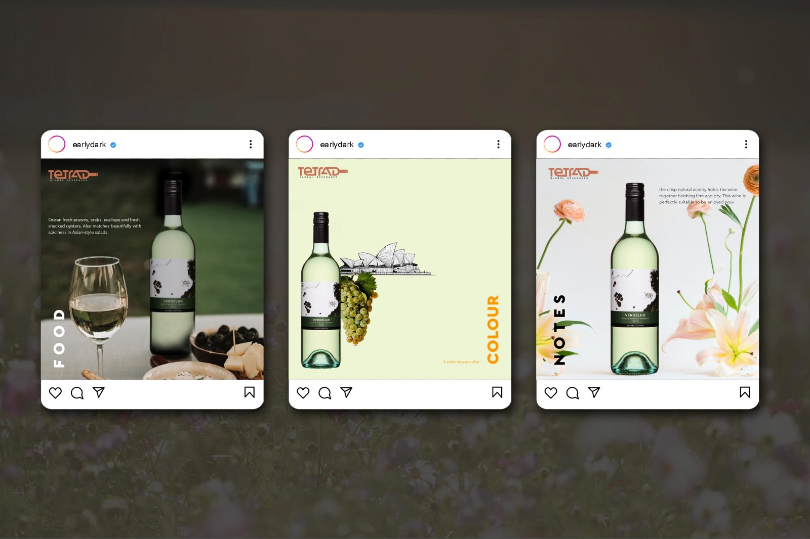
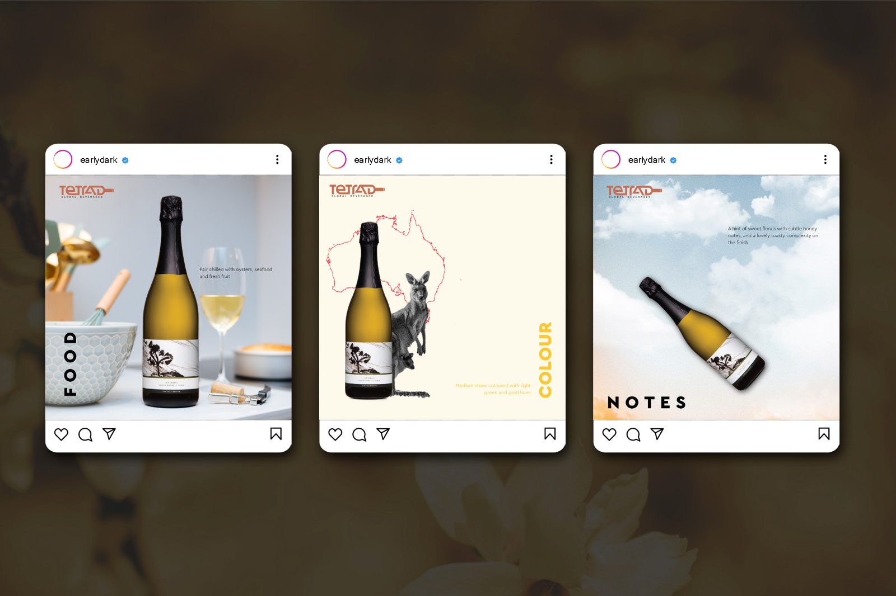
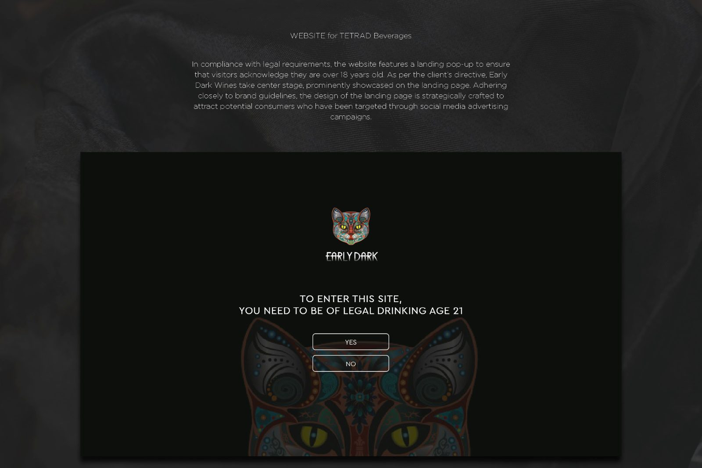
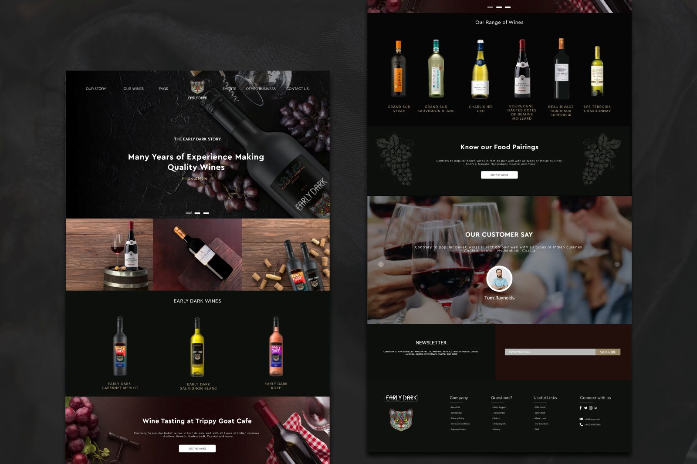

Tetrad
Beverages
Amid the pandemic, a social media strategy built on existing collateral alongside a refreshed design campaign for a range of wines, tailored to each season. Tetrad also needed a new website design and layout carrying the new brand image, giving consumers access to the range.
A wine importer with a catalogue, a lockdown, and no way to sell online.
Tetrad Global Beverages supplies French, American and Australian wines across several southern states of India, and holds licences to retail a number of established wine brands through its own online platform and stores in Bangalore and Chennai.
The work centres on Early Dark, a Cabernet Merlot, and reuses the photography Tetrad already owned rather than commissioning a shoot — a constraint that shaped the whole campaign. Posts are organised by recurring themes so a catalogue of bottles could be posted indefinitely without repeating itself.
- FoodThe bottle placed against a pairing, shot flat and warm.
- ColourThe label abstracted into a field of its own colour.
- NotesTasting notes carried by illustration rather than photography.
A seasonal strand ran the campaign through the twelve days of Christmas, and a location strand tied posts back to Bangalore. The site that followed opens on an age gate — you must be 21 to enter — before reaching the range, the tasting notes and the food pairings.
Nine pages, front to back.








